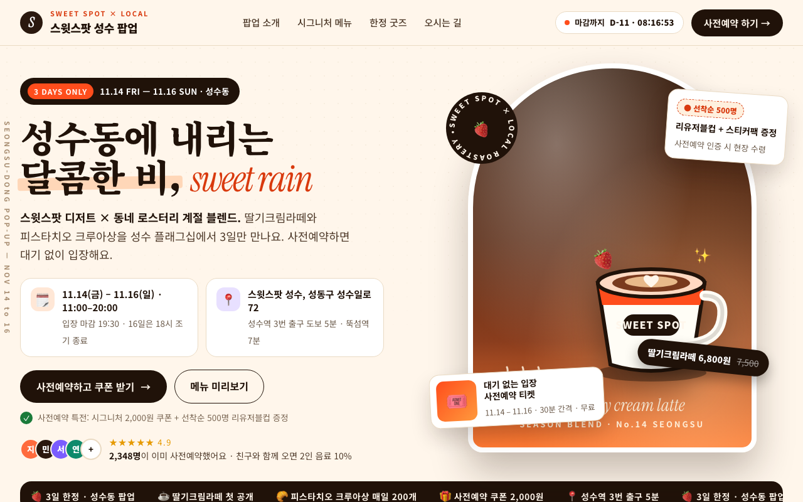
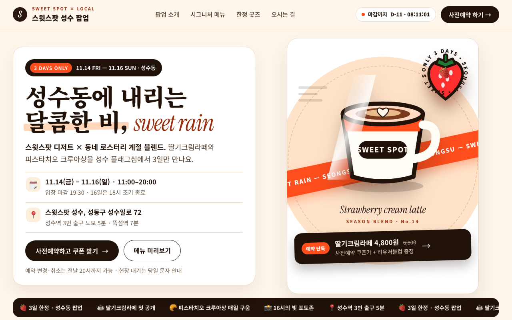

| issue | opened | resolved | attempts | tried |
|---|---|---|---|---|
| 물체 형태(LO)·움직임(MT) 반응이 낮음: 뚜렷한 사물 실루엣이 없는 텍스트 위주 화면 | r0 | r5 | 5 | r4: 아치+사선슬래시 확대를 버리고 초대형 티켓 프레임(노치+천공+바코드)을 단일 오브제로 교체, 스팀·떨어지는 딸기·대각선 샤인 스윕으로 운동감 부여 / r5: 아치 삭제하고 단일 컵+자이언트 딸기 실루엣+ -12도 사선 무빙밴드+회전 뱃지로 교체, 샤인스윕·스피드선으로 운동감 부여 |
| 보상 회로(OFC/vmPFC)는 켜졌는데 끌림 헤드는 평범: 가치 신호가 있지만 무엇이 좋은지 읽히지 않음 | r0 | r5 | 5 | r2: 경쟁하던 가격택·선착순필·티켓 스티커 전부 삭제하고 컵 바로 밑에 단일 혜택바(4,800원 쿠폰가+리유저블컵)만 배치, 좌측 마이크로는 입장 혜택으로 분리 / r5: 첫화면 가격을 히어로오퍼 1곳(4,800원+리유저블컵)으로 통일, 별점·2,348명·마퀴쿠폰가 삭제해 경쟁신호 제거 |
| 장소 영역(PPA)이 우세: 배경 풍경이 화면을 지배해 내용이 묻힘 | r0 | r5 | 5 | r2: 도트 배경·그라데이션 아치 제거, 크림 솔리드 배경+화이트 카피패널+딥브라운 솔리드 아치로 단순화, 정보카드 2종을 단일 한줄 바로 통합 / r5: 딥브라운 대형 아치 풍경 제거, 화이트 스테이지+단일 피치원 단일배경으로 축소해 컵이 프레임 독점 |
| 주의 반응이 첫 2초 이후 꺼짐 (+0.62 → +0.47): 첫인상 뒤에 볼 게 없음 | r0 | open | 6 | r5: 히어로 직후 요일탭(금/토/일) 자동순환+레이어 게이지 애니메이션 상세 리빌 블록으로 두번째 발견 추가 / r6: 탭 자동순환+게이지(실패작) 제거하고 히어로 내부 1.7-2.5초 지연 팝업 재료칩 3개 + 호버로 열리는 돋보기 단면 핫스팟 상세블록으로 교체해 두번째 발견을 |
| r | ui | 뇌 | 심사위원 | kept | changes | sourced photos |
|---|---|---|---|---|---|---|
| r0 | 0.646 | 0.585 | 0.75 | ✓ | ||
| r1 | 0.535 | 0.382 | 0.69 | · | 컵 실루엣 1.3배 확대·굵은 외곽선으로 단일 포컬화 + 아치 상단 -6도 사선 리본과 스피드선 애니메이션으로 운동감 부여, 기존 스핀·스티커 ; 시선이 닿는 컵 바로 밑에 단일 혜택라인(6,800→4,800원 쿠폰가+리유저블컵)으로 통합, 경쟁하던 가격택·필·티켓 스티커 삭제; 도트 배경·그라데이션 아치 제거하고 크림 솔리드+화이트 카피패널+딥브라운 솔리드 아치로 단순화, 카피는 흰 패널 위에만 배치 | |
| r2 | 0.635 | 0.476 | 0.81 | · | 컵을 아치 밖으로 돌출시킨 단일 초대형 실루엣(320px·8px 외곽선)으로 키우고 스핀·스티커 3종 삭제, 대신 아치를 가로지르는 -8도 오렌; 경쟁하던 가격택·선착순필·티켓 스티커 전부 삭제하고 컵 바로 밑에 단일 혜택바(4,800원 쿠폰가+리유저블컵)만 배치, 좌측 마이크로는 입장 혜; 도트 배경·그라데이션 아치 제거, 크림 솔리드 배경+화이트 카피패널+딥브라운 솔리드 아치로 단순화, 정보카드 2종을 단일 한줄 바로 통합 | |
| r3 | 0.661 | 0.546 | 0.81 | ✓ | 스티커·스핀·가격택 전부 삭제하고 컵을 340px 단일 초대형으로 확대·앞으로 -5도 기울여 아치 상단 돌출, 뒤에 반투명 에코 실루엣 2개로 ; 경쟁 혜택 요소 제거하고 시선이 닿는 컵 바로 밑에 단일 혜택바(4,800원 쿠폰가+리유저블컵)만 겹쳐 배치, 좌측은 무료입장 안내로 분리; 도트·그라데이션 제거, 크림 솔리드 배경+화이트 카피 패널+딥브라운 솔리드 아치로 단순화해 카피는 패널 위에만 배치 | |
| r4 | 0.644 | 0.500 | 0.81 | · | 아치+사선슬래시 확대를 버리고 초대형 티켓 프레임(노치+천공+바코드)을 단일 오브제로 교체, 스팀·떨어지는 딸기·대각선 샤인 스윕으로 운동감 부; 하단 혜택바 삭제하고 컵에 끈으로 매단 행택형 가격택(4,800원+리유저블컵)으로 눈길 옆에 단일 배치, 마퀴의 2,000원 경쟁가격 삭제; 620px 딥브라운 아치 풍경을 버리고 크림 바탕 위 화이트 히어로 카드+컴팩트 티켓(520px)으로 크롭, 카피 전면 솔리드 패널화 | |
| r5 | 0.693 | 0.637 | 0.81 | ✓ | 아치 삭제하고 단일 컵+자이언트 딸기 실루엣+ -12도 사선 무빙밴드+회전 뱃지로 교체, 샤인스윕·스피드선으로 운동감 부여; 첫화면 가격을 히어로오퍼 1곳(4,800원+리유저블컵)으로 통일, 별점·2,348명·마퀴쿠폰가 삭제해 경쟁신호 제거; 딥브라운 대형 아치 풍경 제거, 화이트 스테이지+단일 피치원 단일배경으로 축소해 컵이 프레임 독점 | |
| r6 | 0.668 | 0.607 | 0.78 | · | 탭 자동순환+게이지(실패작) 제거하고 히어로 내부 1.7-2.5초 지연 팝업 재료칩 3개 + 호버로 열리는 돋보기 단면 핫스팟 상세블록으로 교체 |